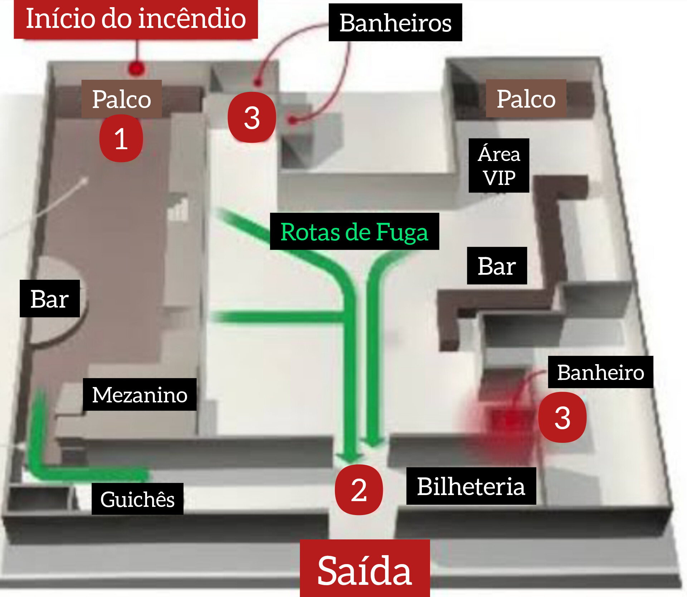

DOM 27 JAN 2013
Boate Kiss
O incêndio em casa noturna matou cerca de 242 jovens.
As pessoas morreram asfixiadas pela fumaça.
O fogo começou por volta das 2h da madrugada.
A Boate Kiss localizada na Rua das Andradas em Santa Maria, RS.
A boate não devia estar funcionando.
O TETO PEGOU FOGO EM UM ISOPOR.
O ISOPOR GERA UMA FUMAÇA MUITO TÓXICA.
Seguranças da boate tentam impedir a saída dos jovens.
Fábio Cevinski anos atrás lutava contra a Leucemia, porém o tratamento o salvou. Fábio morreu no incêndio da Boate Kiss.
636 pessoas conseguiram sobreviver ao incêndio.
Não vá a boates.
Muitas vítimas tentaram escapar pelo banheiro do estabelecimento e acabaram morrendo.
Uma boate sem alvará.
Não deveriam existir.
O fogo teve início com um sinalizador utilizado no show da banda Gurizada Fandangueira.
Nenhum corpo encontrado em situação precária.
Os corpos dos jovens foram levados para a quadra do Centro Desportivo Municipal.
A última música que tocou na boate às 2h30 foi "amor de chocolate", do cantor Naldo, a banda que cantava utilizou um dispositivo pirotécnico como efeito visual. As fagulhas atingem a espuma acústica que revestia o teto da boate, e que começou a pegar fogo.
Muitas das pessoas que conseguiram sair da boate logo morreram a caminho do hospital.
Uma boate com apenas uma saída
A falta de sinalização da boate fez com que as pessoas corressem para o banheiro pensando ser uma saída.
As pessoas entraram em pânico e pisotearam umas as outras.
A saída foi dificultada por uma grade colocada perto da porta de entrada que foi colocada para organizar a fila de entrada.
POLIORETANO É TÓXICO.
As pessoas não conseguiam respirar.
Os bombeiros tiveram que quebrar uma parede para auxiliar no resgate das vítimas.
O ambiente escuro.
29° 41' 03 5'' 5, 53° 48' 25'' 0
FUMAÇA TÓXICA.
MORRERAM INTOXICADAS.
SÁB 08 MAR 2025 — Morreu afogado Leonel Nunes da Silva irmão de uma das vítimas do incêndio Leandro Nunes da Silva.
A morte consertou uma ponta solta .
Os dois poderiam estar na lista da morte a muito tempo.
Livro: TODO DIA A MESMA NOITE.
BaixarJessica's premonitionKISS LOTADA | Publicações nas redes sociais, que falam da lotação da boate Kiss em festas antes do incêndio, estão repercutindo hoje. #JulgamentoKissNoSBT pic.twitter.com/JIuIZ7m6yG
— SBT RS (@sbtrs) December 6, 2021
Atores da série Todo Dia A Mesma Noite e as pessoas reais que estavam envolvidas no incêndio:
Todo o dia a mesma noite - O Incêndio da Boate Kiss
— Carolina Türck (@carolinaturck) January 26, 2023
Quem são os personagens?
Mais detalhes da série com atores que interpretam personagens cujas vidas se transformaram após o incêndio na Boate Kiss.
SEGUE O FIO 🧶#TodoDiaAMesmaNoite #boatekiss #netflix